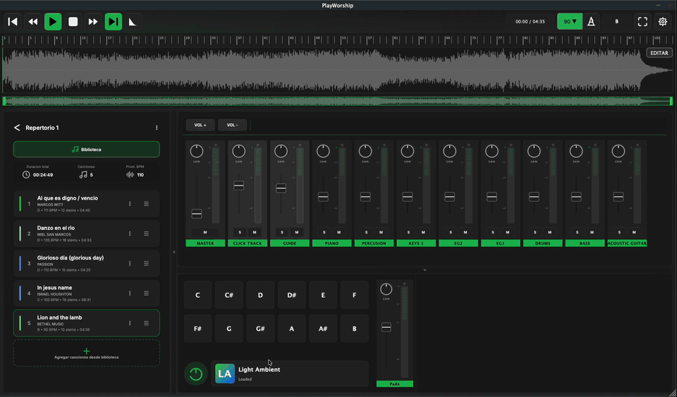
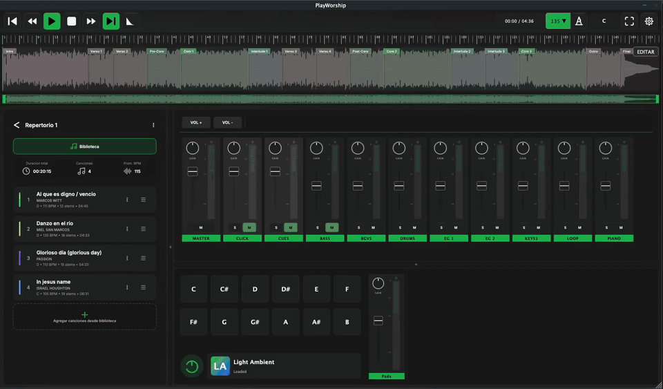
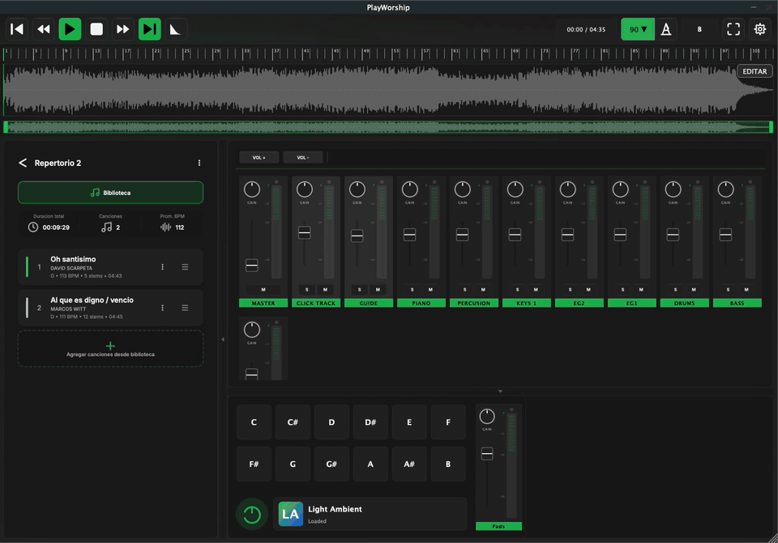
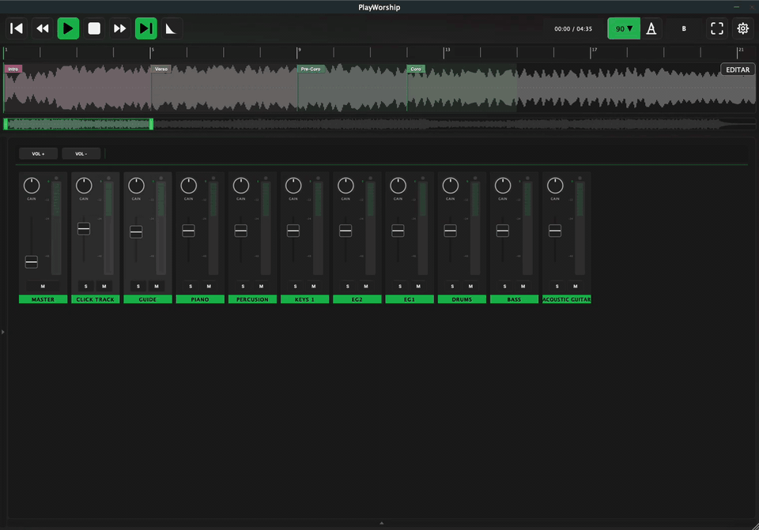
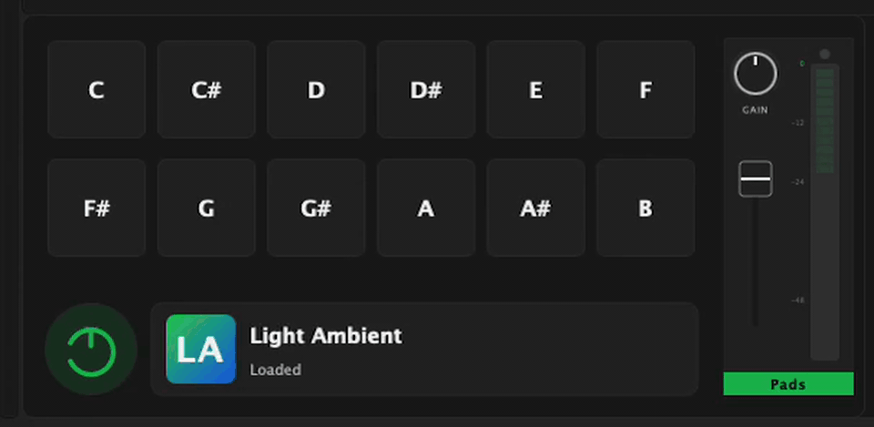

Reproducción multitrack
Carga sets con todos los canales separados: drums, bass, keys, BGVs, pads y click para control total desde la consola.
Core
Reproducción de secuencias para Windows y Mac
El grupo de Telegram existe porque estamos construyendo Play Worship en comunidad: músicos, líderes y técnicos aportando ideas reales para crear un producto excelente para los tiempos de ministración y adoración.

Play Worship importa y lee tu biblioteca desde almacenamiento local para trabajar rápido, estable y sin dependencia de internet.
No dependes de la nube para abrir tus canciones. Tu set queda disponible aun cuando no hay conexión.

Visualiza intro, verso, coro, puente y final directamente sobre el waveform. Salta entre secciones al instante para dirigir con seguridad en vivo.
Ideal para ensayos y servicios: tu equipo siempre sabe en qué parte está la canción.

La app está dividida en paneles que puedes activar o ocultar con toggle. Así limpias la pantalla y te enfocas en la tarea actual: biblioteca, mixer, secciones o transport.
Ejemplo práctico: durante el ensayo puedes mostrar más controles; en vivo, dejas solo lo esencial para reducir errores y trabajar más rápido.

Activa paneles de pads para sostener atmósferas entre canciones, transiciones y momentos de oración sin cortar el flujo del servicio.
Úsalo como capa musical de fondo: más continuidad, más intención y una experiencia de adoración más envolvente.

Construido para iglesias reales, con presupuestos reales. Simple de usar, poderoso en escena.
Carga sets con todos los canales separados: drums, bass, keys, BGVs, pads y click para control total desde la consola.
Cambia la tonalidad sin cortar la música. Algoritmo SoundTouch de alta fidelidad — sin artefactos ni latencia perceptible.
Enruta el click al IEM del músico y la mezcla de sala al FOH mediante tu interfaz ASIO o WASAPI. Sin mezclas intermedias.
Servidor web embebido: controla el set desde cualquier dispositivo en la misma red WiFi, sin instalar nada adicional.
Importa canciones, define el orden del culto y arranca con un toque. Tu equipo llega y el sistema ya está configurado.
Descarga cualquier multitrack de Loop Community Prime y cárgalo directamente. Sin conversiones ni pasos extra.
Sin configuraciones complejas. Sin curvas de aprendizaje largas. Solo músicos enfocados en adorar.
Instalador firmado para Windows 10/11. Listo en menos de 2 minutos, sin dependencias raras ni permisos continuos de administrador.
Arrastra la carpeta del pack descargado de Loop Community o cualquier fuente compatible. La app organiza todo automáticamente por canales.
Selecciona tu dispositivo ASIO o WASAPI y asigna las salidas en segundos. Play Worship detecta interfaces conectadas al instante.
Ajusta tonalidades, controla volúmenes por canal y sincroniza tu equipo desde una sola pantalla, sin distracciones.
En esta etapa Play Worship está abierto para que más equipos lo prueben y lo usen. Más adelante tendrá un precio súper accesible para iglesias y ministerios.
Nuestro grupo de Telegram no es solo un canal de descarga: es una comunidad activa que está aportando feedback, ideas y pruebas en campo para pulir cada detalle del producto.
Puedes descargarlo, probarlo con tu equipo y usarlo en servicios reales sin costo.
Descarga gratis, sin tarjeta de crédito. Actualiza cuando estés listo.